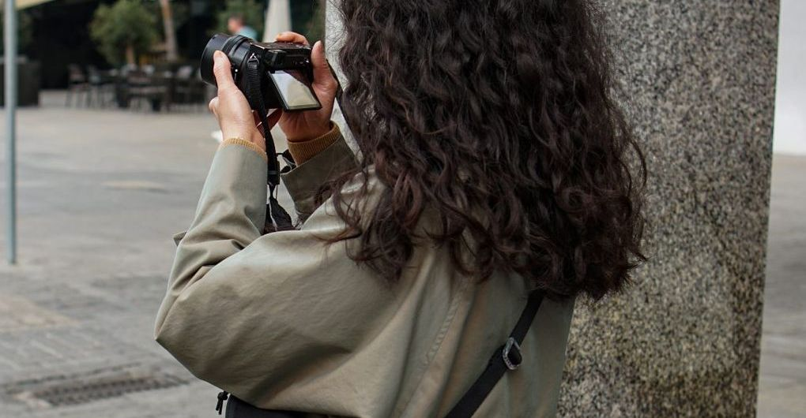
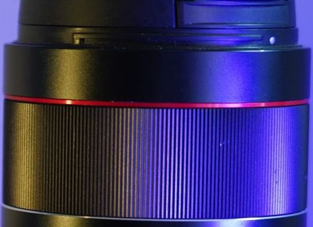
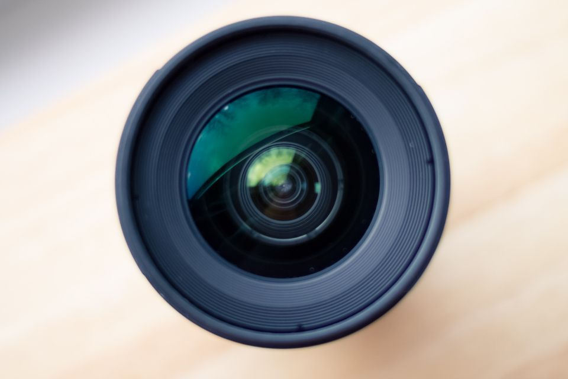

MOD · ÇEKİMLER[12–19]
Çekim türleri: hangi kare sizin?
Vesikalıktan ürün fotoğrafına yedi çekim türü, her biri için hazırlık notları ve stüdyoya sormanız gerekenler. Kararsızsanız kırmızı kalem seçiciyi kullanın; ihtiyacınıza uyan kareleri o işaretlesin.
Kırmızı kalem seçici
Ne için fotoğraf lazım? İhtiyacınızı seçin; kalem uygun kareleri daire içine alsın, ötekileri soluklaştırsın. Daireli kareye dokunup ayrıntısına inin.
İhtiyacınız
Bir ihtiyaç seçin; kalem uygun kareleri işaretleyecek.
Emin olamadınız mı? Türü boş bırakıp stüdyoya ne istediğinizi yazın.
▸ 12A · BÜYÜTME
Vesikalık ve biyometrik fotoğraf
Pasaport, kimlik kartı ve sürücü belgesi başvurularında biyometrik fotoğraf istenir; okul ve iş başvurularında çoğu zaman klasik vesikalık yeterlidir. Hangisinin, hangi ölçüde ve kaç adet istendiğini başvurduğunuz kurum belirler.
Kimler için
- Pasaport, kimlik kartı, sürücü belgesi
- Vize başvuruları (ölçü ülkeye göre değişir)
- Okul, kurs ve iş başvuruları
- Bebek ve çocuk vesikalığı
Yanınızda olsun
- Kurumun istediği ölçü ve adet
- Vize için konsolosluğun fotoğraf şartı
- Gözlük kullanıyorsanız gözlüğünüz
- Koyu ya da renkli, desensiz bir üst
Sorun: e-başvuru için dijital dosya da gerekiyorsa bunu çekimden önce söyleyin.
▸ 13A · BÜYÜTME
Aile ve çocuk çekimi
Bir doğum günü, yeni bir kardeş, büyükanne ve büyükbabanın da geldiği bir pazar günü. Aile fotoğrafı stüdyoda fonlu olarak ya da dışarıda gün ışığında çekilebilir.
Planlarken
- Kaç kişi olacağınızı ve yaş aralığını yazın
- Stüdyo mu dış mekân mı, karar verin
- Çocukların uykulu ve aç olmadığı bir saat seçin
Kıyafet ve ufak tefek
- Birbirini tamamlayan, desensiz renkler
- Küçükler için yedek kıyafet ve ıslak mendil
- Sevdiği bir oyuncak dikkatini toplamaya yardım eder
Sorun: kişi sayısına göre stüdyo düzeni ve süre değişebilir; çekim türünü ve kişi sayısını yazın.
▸ 14A · BÜYÜTME
Düğün ve nişan
Söz, nişan, kına, nikâh ve düğün; bir de bunlardan ayrı bir günde yapılan hikâye ya da dış çekim. Her birinin akışı farklı. Ayrıntılı süreci, altın saat hesabını ve hazırlık listesini düğün sayfasında bulabilirsiniz.
Görüşmede konuşulanlar
- Tarih, saatler ve mekân adresleri
- Hangi anların çekileceği
- Dış çekim yeri ve saati
- Albüm, baskı ve video istekleri
Sizin hazırlığınız
- Aile pozu listesi
- Yağmura karşı yedek plan
- Yüzük, davetiye, buket gibi detaylar
▸ 15A · BÜYÜTME
Dış çekim
Çift, aile, portre ya da mezuniyet. Dış çekimde ışığı güneş belirler: öğleye doğru gölgeler sertleşir, gün batımından önceki saatte ışık sıcak ve yumuşaktır.
Yer seçerken
- Kalabalık saatleri hesaba katın
- Bazı korular, tarihi yapılar ve özel alanlar çekim için izin isteyebilir
- Kıyafet değiştirecek bir yer düşünün
Işık
- Altın saat: güneşin ufka yakın olduğu dönem
- Bulutlu hava yumuşak, gölgesiz ışık verir
- Gün batımı saati yaz ile kış arasında çok değişir

Temsili görsel▸ 16A · BÜYÜTME
Ürün çekimi
Bir e-ticaret sitesi, pazar yeri mağazası, katalog ya da sosyal medya hesabı için ürün fotoğrafı. Aynı ürün, kullanılacağı yere göre farklı kadraj ve fon ister.
Hazırlık
- Ürünleri temizleyin, etiket ve ambalajı düzeltin
- Renk ve beden seçeneklerini listeleyin
- Her ürün için kaç açı istediğinizi yazın
Bilmekte fayda var
- Birçok pazar yeri ana görselde düz, açık renk fon ister; platformunuzun güncel kuralına bakın
- Kare (1:1) kadraj çoğu mağaza ve akışta rahat kullanılır
- Cam ve metal gibi parlak yüzeyler için ışık ayrıca planlanır
Sorun: ürün sayısı ve kullanım yeri belli olunca seçenekleri konuşmak kolaylaşır.

Temsili görsel▸ 17A · BÜYÜTME
Baskı ve çerçeve
Telefonda duran fotoğraflar basılınca başka bir hayat bulur. Baskı, çerçeve ve albüm seçenekleri için stüdyoya sorun. Hangi karenin hangi boyda net çıkacağını buradaki hesaplayıcıyla önceden görebilirsiniz.
Dosyayı hazırlarken
- Fotoğrafı mesajlaşma uygulamasından değil, telefonun galerisinden orijinal haliyle gönderin
- Ekran görüntüsü yerine asıl dosyayı kullanın
Oran meselesi
- Telefon kareleri çoğunlukla 4:3, 10×15 kâğıt ise 3:2 orandadır
- Oran tutmadığında kenarlardan bir miktar kırpılır
Baskı netlik hesaplayıcı
Fotoğrafın piksel ölçüsünü girin ya da hazır bir seçenek seçin.
12,2 megapiksel · oran 4:3
Ölçüt: yakından bakılan baskıda 300 dpi civarı çok net kabul edilir; duvardaki büyük baskılar uzaktan bakıldığı için daha düşük çözünürlükte de iyi görünebilir. Kesin sonuç için dosyayı stüdyoya gösterin.
▸ 18A · BÜYÜTME
Video: klip ve tanıtım
Düğün klibi, bir işletmenin tanıtım filmi ya da sosyal medya için kısa bir video. Ne çekileceğini en iyi siz anlatırsınız; mesajınızda şu üçü olsun yeter.
Mesajınızda olsun
- Videonun türü ve nerede yayınlanacağı
- Kabaca süresi: kısa bir dikey video mu, birkaç dakikalık bir film mi
- Çekim yeri ve tarihi
Dikey mi, yatay mı?
- Telefonda izlenen kısa videolar çoğunlukla dikeydir (9:16)
- Televizyon ve web sitesi için yatay (16:9) yaygındır
- İkisi de gerekiyorsa çekimden önce söyleyin
Sorun: video çekimi ve kurgu seçenekleri için ne istediğinizi yazın, bilgi verelim.

Temsili görselKareniz belli mi?
Randevu seçici, seçtiğiniz çekim türüne göre birkaç soru sorar ve gününüzü içeren hazır bir WhatsApp mesajı oluşturur.